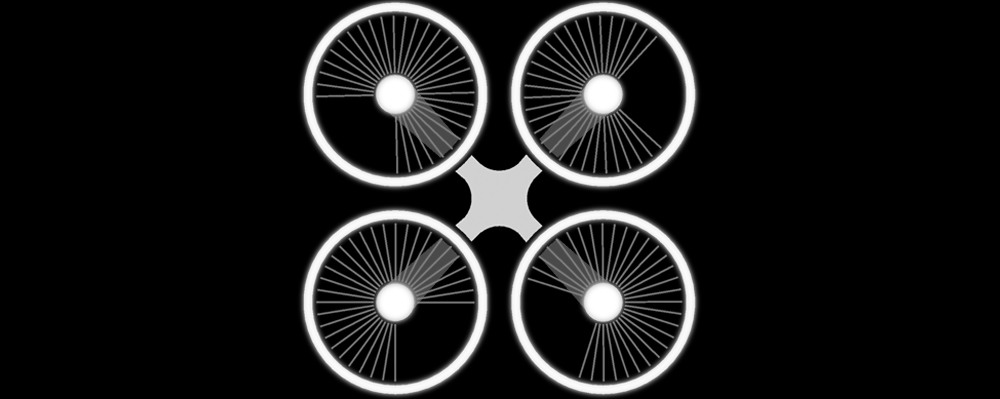

3D visualusation of architecture competitions, real estate marketing, productvisualisation/industrial design, visual storytelling, animations, cinemagraph
VIRTUAL SYSTEMS
Interactive immersive walkthrough, virtual solutions for "gamification", online/offline systems...no limits for ideas

AERIAL VIEWPOINTS
Mixed aerial 3D visualisation, photography and animation, interactive viewpoints, 360° panorama, interface solutions for marketing portfolio